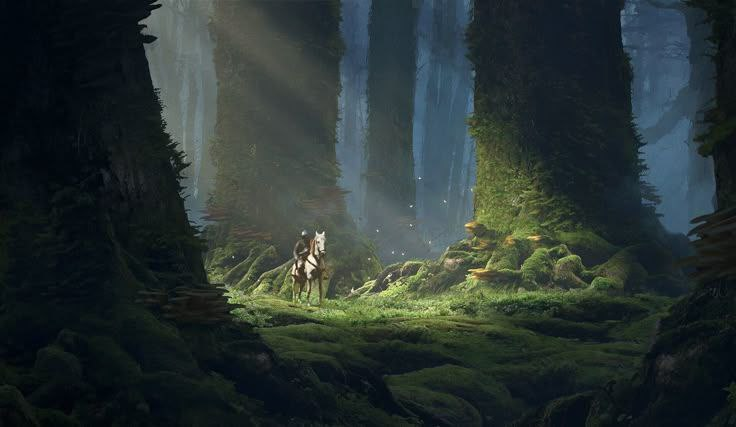
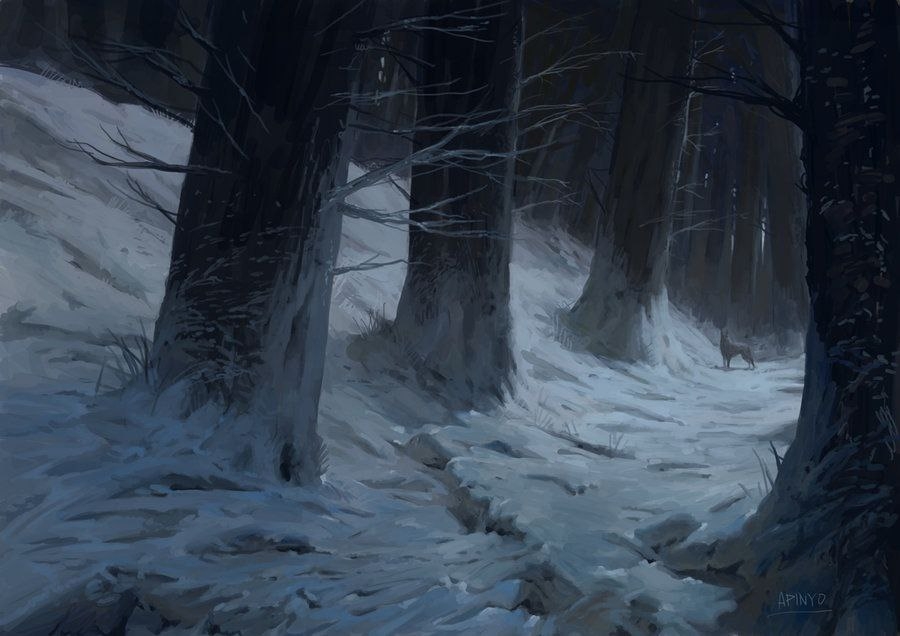
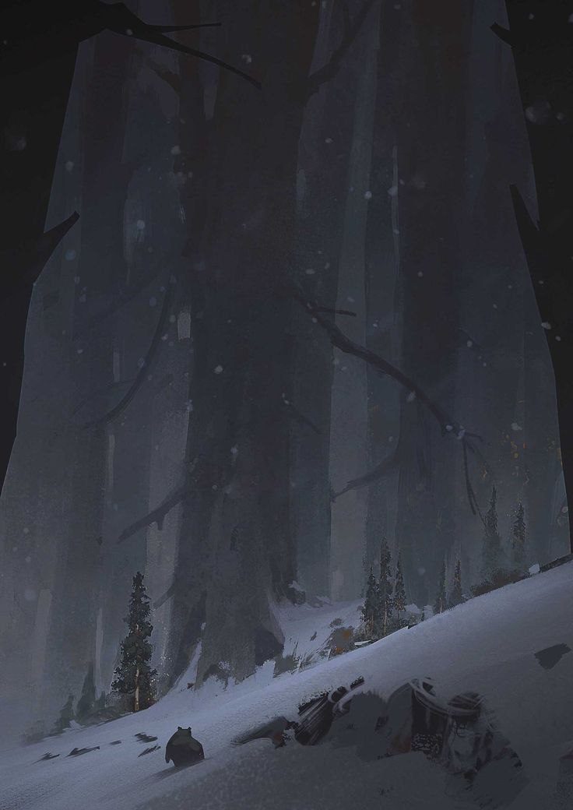

Этот лес полностью хвойный: бесконечные ряды елей и сосен вздымаются к небу, их стволы такие широкие, что, чтобы обхватить одно дерево, потребуется не менее четырёх человек. Самые монструозные великаны растут в центре леса, создавая естественную крышу над головой. Чем ближе к Великому Титановому Хребту, тем ниже становятся деревья, уступая место суровому снежному пейзажу. Несмотря на свою густоту, лес остаётся довольно светлым: солнечные лучи проникают сквозь хвойные кроны, играя на земле небольшими бликами. Однако в самых глубоких уголках леса царит тень, словно напоминая, что здесь живут не только привычные звери, но и нечто большее.
Титанов лес верхний

Добро пожаловать в Титанов лес верхний!
Титанов лес верхний — это величественный мир исполинских деревьев, раскинувшийся на северо-западе Средиземного края. Здесь пахнет смолой, сосновыми иголками и сырой землёй, а в густых зарослях перекликаются отголоски старых дварфийских легенд. Лес практически лишён магии, но его природное величие и так делает его по-настоящему грозным.
Природа

Обитатели

Титанов лес — дом для множества существ. Здесь можно встретить обыкновенных лесных обитателей: волков, медведей, лис, оленей, а также мелкую живность, от белок до зайцев. Но есть и по-настоящему уникальные существа: Медвесычи, Волколени и Титаны — огромные полулюди, которые живут семьями и редко вмешиваются в дела других рас. Они считаются хранителями этого места, уважая его законы и охраняя свои территории.
Поселения

Хотя лес на первый взгляд кажется суровым и диким местом, в нём есть несколько человеческих поселений: Первая деревня находится на берегу, окружённая деревьями и питающаяся дарами реки Мары. Здесь промышляют рыболовством и лесозаготовкой. Вторая — деревня между Тормом и Марой — уютное поселение в прилеске, служащее перевалочным пунктом для путешественников и торговцев. Деревня у Титанового Хребта — самая уединённая, расположенная у подножия северных гор, где всякая жизнь уже становится редкостью. Здесь живут самые суровые люди и дварфы, привыкшие к тяжёлым условиям.
И все же...
Глубоко в чаще леса, среди корней гигантских сосен, спрятаны следы прошлого — разрушенная дварфийская крепость. Когда-то это было мощное укрепление, но сейчас от него остались лишь полуразрушенные стены, мрачные проходы и эха давних битв. Что именно случилось с его обитателями — загадка, но ходят слухи, что внутри до сих пор можно найти древние сокровища и опасности.